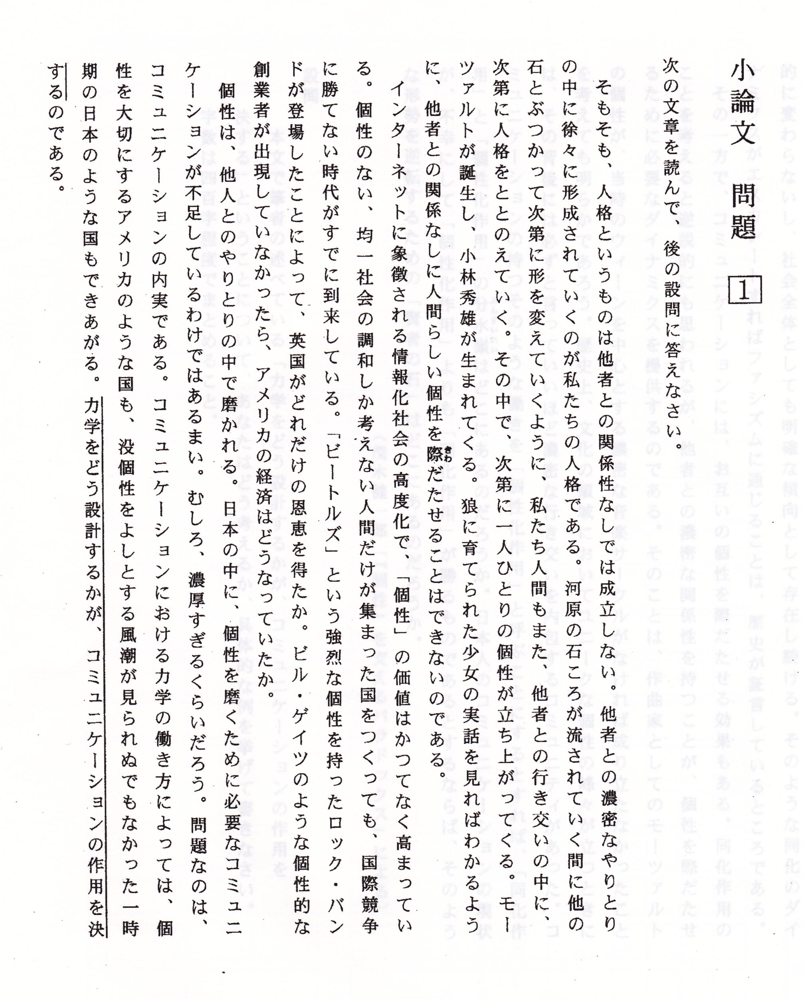
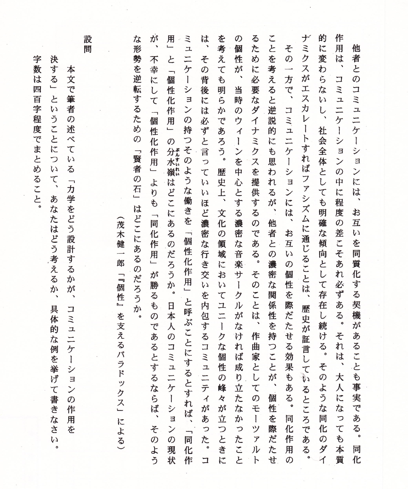
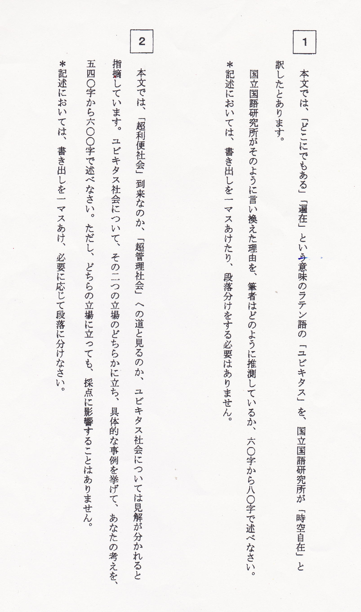
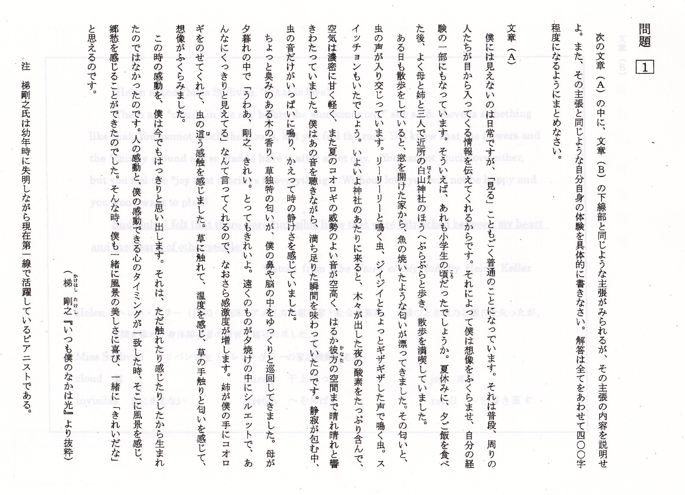
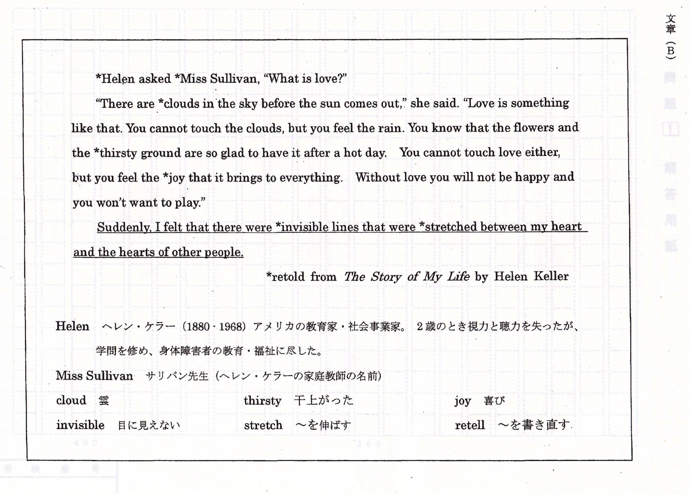
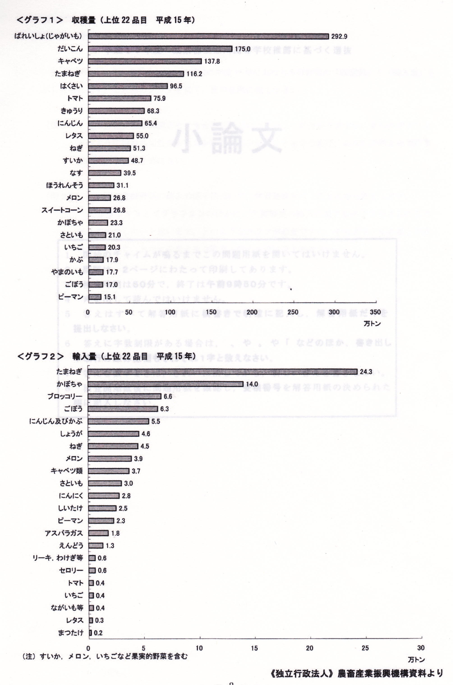
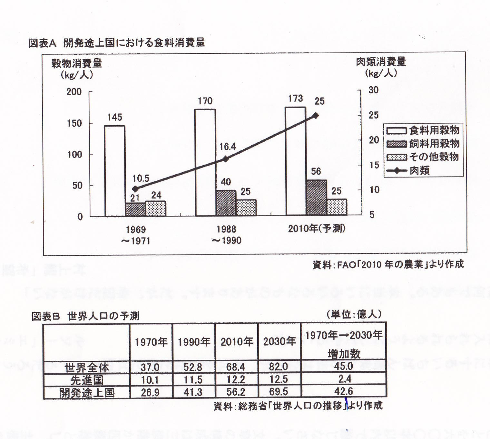
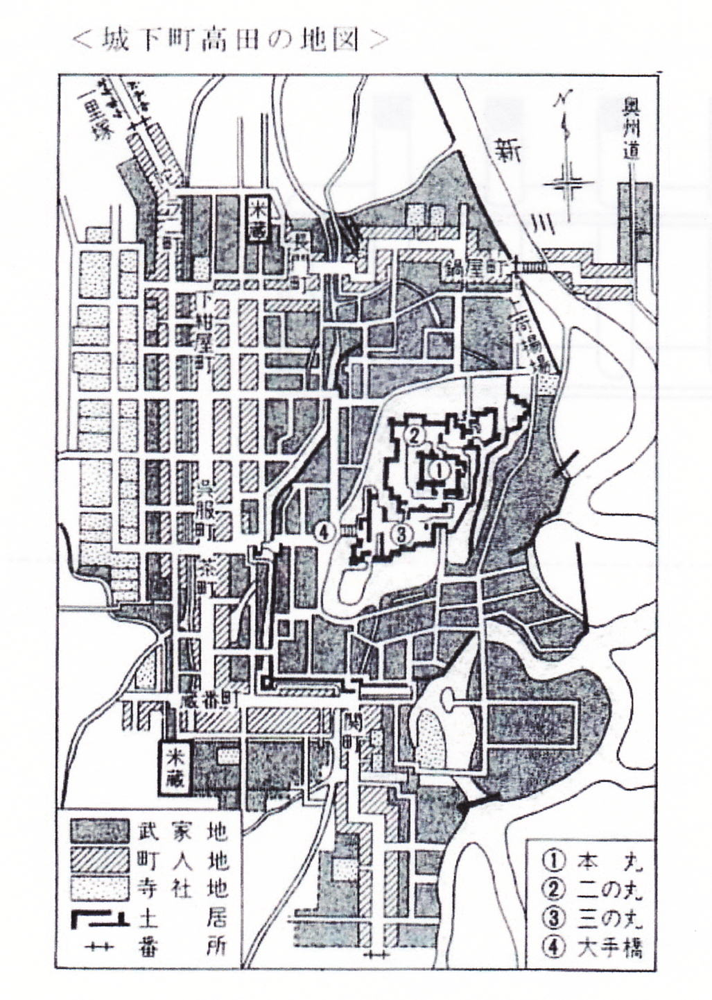
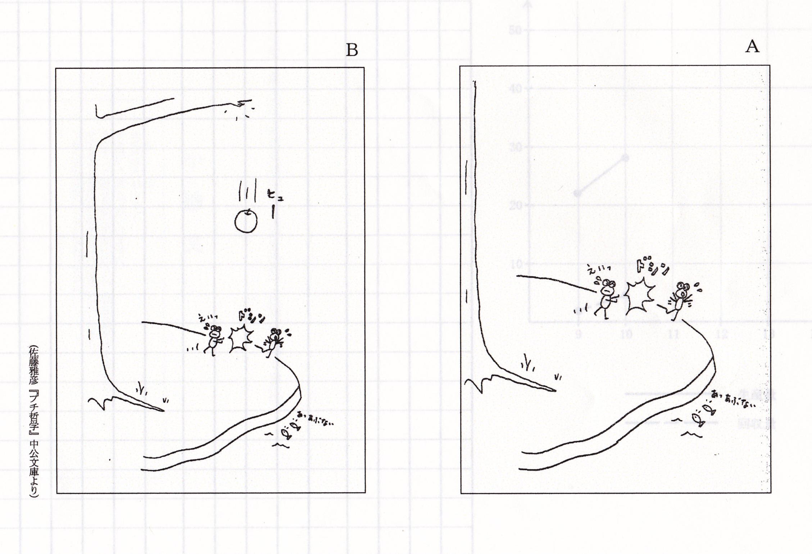
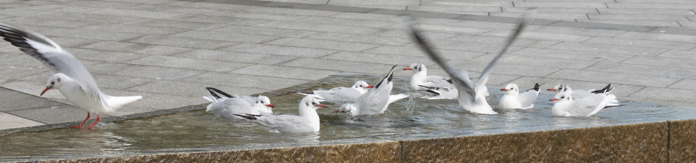

⑨ グラフの読解型－２（都立両国）
準備中

答案百花 光る文章講座 高校入試の小論文 ― 公立編 ― ○ はじめに |
① 短文の課題型－１（都立西） ② 同－２（都立白鴎） ③ 一字の課題型 （都立駒場） ④ 文章読解型－１（都立国立） ⑤ 同－２（都立新宿） ⑥ 同－３（都立国際） ⑦ 英文添付型 － （都立国立） ⑧ グラフの読解型－１（都立立川） ⑨ 同－２（都立両国） ⑩ 文章・図表複合型－（都立八王子東） ⑪ 理社の並列型－（都立戸山） ⑫ イラスト連想型－（都立武蔵） |
|
高校入試の作文・小論文（講座案内） 中学生の国語（講座案内）
答案百花・総合案内
答案百花「高校入試の小論文」 →私立編
作文打出の小づち
総もくじ
作文編 国語編 小論文編 閑 話
Gallery（作品展示場） トップページへ
○ はじめに
出題形式によって分類すると、上表の目次のようになる。
奇しくも都立高校のパターンが網羅されたが、
他府県の出題形式はこのどれかと一致する。
都立西高や駒場高の場合、要項では「作文」となっているが、
書き方（構成）によっては小論文となるため、また、
出題形式の比較のために、ここに収載した。
ただし、「私立編」にも述べてあるように、実際の答案について、
試験官は「これは小論文で、これは作文だ」
というふうな読み方をしているわけではない。
内容に光るものがあり、まとまっていさえすればよいのである。
作文と小論文の違いや書き方については
「高校入試の作文・小論文」の書き方講座を参照。
| 次の言葉について、あなたが感じたり思ったりすることを600字以内で述べなさい。（50分） 「自然は曲線を創り、人間は直線を創る」（湯川秀樹） |
| ２度目の答案 | 添削例・諸注意 |
| 僕は休日をボーイスカウトの活動に参加したり、趣味の都心歩きをしたりして過ごしているので、この言葉の意味に共感を覚える。 ボーイスカウトの活動の一環として、年に一，二度キャンプをする。僕の所属する市の一団では毎年、武蔵五日市駅からバスで１時間、徒歩で更に３０分歩いた所にあるキャンプ場へ、必ず行く。そこは東京とは思えないほどの自然があり、川や道、木々はどれも曲線である。直線でできているものは何一つない。 都心歩きでよく行く街は丸の内や六本木である。この二つの街には企業の本社ビルや商業用の複合ビルがそびえている。ビルは大きくて、非常にきれいだ。それは何によるのだろうか。よく見ると、全てが直線によって仕切られているのだ。 僕は『ゾウの時間ネズミの時間』という本を読んだことがある。それによると、「生物界には車輪がない」ということである。言われてみれば、なるほど、その通りである。確かに、自然界には平らな道はない。このために、生物に車輪のあるものは生まれなかったのだろう。いずれにしても、自然界は曲線でできているのである。 自然が曲線を創り、人間が直線を創るということは、見た目も人に与える印象も対照的でありながら、人間が生活を営むにはこの二つがともに支え合うことが大切だと思った。 （以上、約６００字） |
← ……毎年必ず、……キャンプ場へ行く。 ← バスで１時間、そこから歩いて３０分の所にある…… ← そこは東京の西のはずれだが、東京とは思えないほどの…… ← そのきれいさは何による…… |
Ｕくんがこの課題で書いたとき、初めはうまくいかず、
３か月ほどして再挑戦した。
３か月の間に、材料が発酵していたと見える。
それにしても、ユニークな本を読んでいたものだ。
読書が、ここにきて役に立ったといえる。
書き直すほどのことはないので、代わりに
同校の他の年度の言葉を見ておこう。
○「人間は、努力する限り、迷うものだ」（ゲーテ）
○「生きるということは徐々に生まれることである」（サンテグジュペリ）
○「海のほか何も見えないときに、陸地がないと考えるのは、
けっしてすぐれた探検家ではない」（ベーコン）
このうち、ベーコンの言葉は比喩であることに注意する必要がある。
もどる
| あなたの中学校をアメリカの中学校から２人の生徒が訪問することになりました。あなたは２人の案内役に選ばれました。２人は日本に来るのは初めてで、本などの知識でしか日本のことを知りません。案内役として、あなたはどういう日本の文化について紹介しようと思いますか。 その文化を選んだ理由と紹介する内容や方法などについて５００字程度で書きなさい。 |
ユニークな２つの答案を紹介しよう。
| Ｔ君の答案 | 添削例・諸注意 |
| 僕は「日本のスポーツ文化」を紹介したい。なぜかというと、スポーツは、言語や文化が異なっていても、どんな人でも共通に楽しめるし、なじみやすく分かりやすいからだ。 その中でも僕は、日本の国技である「相撲」を紹介する。その内容と方法は、まず、相撲とはどんなものか実際に見てもらう。国技館へ行き、土俵の上でぶつかり合う力士たちを見せて、その迫力を知ってもらう。そして、力士が四股をふんだり、塩をまいたりする動作、相撲のルールや技、土俵に上がってから下りるまでの動作について説明する。行司の衣装や軍配、しぐさなども見てもらう。その上で、今度は実際に相撲を体験してもらう。相撲部屋へ行って、ふんどしをつけ、力士に手合わせをしてもらう。相撲取りの力強さを知ってもらうのだ。 このようにして、相撲のことを頭で知り、体で感じてもらうことによって、日本のスポーツ文化を理解してもらうのだ。 （以上、約５００字） |
← その迫力に接してもらう。 ← ……下りるまでの作法、 |
目の付け所がおもしろい。
これが伝統文化であるとすれば、次は新興文化である。
| Ｋ君の答案 | 添削例・諸注意 |
| 僕の趣味は東京の都心歩きで、これまでよく行った場所は丸の内や六本木である。僕は外国人にはまずこの二つの街を紹介したい。 丸の内は閑静で、多くの会社が立ち並んでいる。丸ビルや新丸ビルなどによって賑わう側面もあるが、僕がこの街が好きなわけは、きれいで静かなところが都会の上質さを物語っているようで、そこにいると落ち着くからである。 六本木は丸の内とは対照的にエキサイティングな街である。東京ミッドタウンや六本木ヒルズがこの街の象徴として立っている。僕にとってもう一つの東京らしさを感じさせてくれる現代的な街である。 なぜ、東京なのか。先日、学校の英語の授業で、京都・奈良派か東京派か、というディベートをした。僕は東京派の尋問係として相手の立論である「寺院や神社が多い」という利点を「歴史をよく知らないと楽しめない」と攻撃をして勝った。 東京は歴史を知らなくても楽しめる。だから、僕は東京の今を、アメリカの中学生の二人に感じてもらいたいのだ。 （以上、約５００字） |
← 街並みがきれいで、静かな…… ← ……ヒルズの二つの高層ビルが六本木の象徴のように立っている。 |
東京がよいという理由がはっきり示されているのがよい。
都立駒場高校では、「波」、「目」、「声」、「朝」などの一文字の課題がよく出される。
ある年の暮、テレビで「偽」という文字が目についた。
京都の清水寺では、毎年「今年の漢字」を決めて、貫主が舞台の上で筆を揮う。
それがニュースで放映されていたのである。
時事を考慮して、「偽」も練習課題に組み込んだ。
次の答案は「偽」という題で書かれたものである。
| はじめの答案 | 添削例・諸注意 |
| 今の日本の食品業界では、消費期限を過ぎた商品を出荷したり、賞味期限の改ざんや偽装表示をしたりと、製品やサービスの信頼性を揺るがす事件が相次いで起きている。消費者の安心や安全が崩れかけている。しかも、老舗や有名店など、多くの人が利用する店が偽装を行っているのだ。そこで、政府は国民の食の安全を守るために、「消費者庁」を創設する考えを示した。相次いだ事件を受けて、生産者の不正を監視し、偽装の防止に力を入れていく考えだ。 私も初め、大手菓子メーカーの「不二家」に始まり、老舗の高級料亭「吉兆」、それに「ミートホープ」など、次々に発覚する食品偽装に息を飲む思いだった。「売る側の人は、こんなにも嘘をついていたのか」と、物を買うのが怖くなった。消費期限を過ぎた製品を口にした人が、体に異常を起こすかもしれないのに、会社の利益を優先して起きた今回の事件は、もはや謝罪して済む問題ではない。 そんな中で、政府の「消費者庁」創設の案は、とても期待がもてそうだ。今回起きた事件の問題解決のための迅速な対応だと思う。しかし、創設した後、ただあるのではなく、食の安全に対する取締りを強化し、再び偽装が起きて国民の信頼を揺るがすことのないよう、頑張ってほしい。 （以上、約６００字） |
← ……表示したりするなど、 ※ 「そこで、政府は……」以下の２文は第３段落にまわしてまとめる。そのほうが、第２段落とのつながりもよくなる。 |
いきなりこの課題を出しても、Ｋくんは反応した。
けっこうニュースを見ているのだ。
| 書き直した答案 | 添削例・諸注意 |
| 今の日本の食品業界では、消費期限を過ぎた商品を出荷したり、賞味期限の改ざんや偽装表示をしたりするなど、製品やサービスの信頼性を揺るがす事件が相次いで起きている。消費者の安心や安全が崩れかけている。しかも、老舗や有名店など、多くの人が利用する店が偽装を行っているのだ。 私も初め、大手菓子メーカーの「不二家」に始まり、老舗の高級料亭「吉兆」、それに「ミートホープ」など、次々に発覚する食品偽装に息を飲む思いだった。「売る側の人は、こんなにも嘘をついていたのか」と、物を買うのが怖くなると同時に、怒りの気持ちさえ湧いてきた。もし消費期限を過ぎた製品を口にした人が、体に異常を起こすようなことがあれば、もはや謝罪して済む問題ではない。事件や問題が発覚すると、長机を前に会社の幹部が並んで「申し訳ありませんでした」と頭を下げる光景をよく見るが、そういう人たちには厳罰が与えられるべきなのだ。 これらの一連の事件を受けて、政府は「消費者庁」を創設する考えを示した。生産者の不正を監視し、偽装の防止に力を入れていく考えだという。迅速な対応もあって、これには期待がもてそうだ。しかし、ただ設置するのではなく、実際に食の安全に対する取締りを強化し、再び偽装が起きることのないよう、頑張ってほしい。 （以上、約６００字） |
◎ このような会見に対する批判が効いている。実際、テレビで見ていても、形式的で誠意が感じられないものね。 |
消費者庁の現状はどうだろうか。中学生の願望に応えているだろうか。
④ 文章読解型－１（都立国立）
まず、問題文を読んでみよう。


| はじめの答案 | 添削例・諸注意 |
| 先日、父は僕に会社内の「力学」について話してくれた。その内容は「同じ力でも同じ方向を向いた力の矢印と違う方向を向いた矢印とでは力の発揮され方が全く違う。社員は常に同じ目的を持ってこそ、自分の力を大きく発揮できる」というものだった。 矢印を同じ方向に向けるという、この例はファシズムに傾く危険性もあるが、実際にはこうでないと物事は進まないと思う。ファシズムや同化作用が起こるのは個々人の個性が弱いからである。だから、個々人が独立性を持って個性を磨く必要がある。個性を磨くためには他の人々とコミュニケーションを図ることが大切である。方向性の意見のについて違いがあれば、どれが最も良い方法であるか、とことん意見を戦わせればよいのである。そうすれば、議論の果てに良い方向も見出せるだろう。それが民主主義でもある。 個々人が方向性を求めてコミュニケーションを図ること、そこに同化作用から個性化作用に転じる「賢者の石」が見出されると思う。 （以上、約400字） |
◎ 始めに具体例をもってきているのがいいね。 ← ……こうでないと、目標は達成できないと思う。 ← 方向性について意見の違いがあれば、…… ← 戦わせば ※ 「民主主義」は余分。 |
問題文をよく読んでおり、
事例がよいので、説得力のある展開となっている。
字句調整をして、書き直す。
| 書き直した答案 | 添削例・諸注意 |
| 先日、父が会社内の「力学」について話してくれた。それは「同じ力でも同じ方向を向いた力の矢印と、違う方向を向いた矢印とでは力の発揮され方が全く違う。社員は常に同じ目的を持ってこそ、自分の力を大きく発揮できる」というものだった。 矢印を同じ方向に向けるという、この例はファシズムに傾く危険性もあるが、実際にはこうでないと、目標は達成できないと思う。ファシズムや同化作用が起こるのは個々人の個性が弱いからである。だから、個々人が独立性を持って個性を磨く必要がある。個性を磨くためには他の人々とコミュニケーションを図ることが大切である。方向性について意見の違いがあれば、どれが最も良い方法であるか、とことん意見を戦わせばよいのである。そうすれば、議論の果てによい方向も見出せるだろう。 個々人が自らの方向性を求めてコミュニケーションを図ること、そこに同化作用から個性化作用に転じる「賢者の石」が見出されると思う。 （以上、約400字） |
◎ 「賢者の石」にまで及んでいて、すばらしい締めくくりになっている。 |
新宿高校では、途中5年ほど、論作文を課さない時期があった。
これは当初の、原型ともいうべき出題例である。

| はじめの答案 | 添削例・諸注意 |
| □１． 元々は、神はあらゆるところに現れるという ような場合に使われていて、今ではその神の ように、コンピュータが「遍在」する社会に なっているということ。 （以上、７１字） □２． ユビキタス社会は、「超利便社会」への道だと思う。なぜなら、あらゆる物がコンピュータにつながることによって、様々な情報を簡単に得ることができるようになるからである。 最近、ＱＲコードというものをよく見かけるようになった。食品の安全性が求められるようになり、野菜などのパッケージにもついているのを見て私はすごく驚いた。ＱＲコードを読み取るだけで、生産地や賞味期限、生産者の顔まで分かってしまうのだ。また、加工食品では、使われている材料やカロリー、アレルギー情報も知ることができる。ＱＲコードを読み取るだけで、安全性やその商品に対する信頼を得ることができる。これほど便利なものはないと私は思う。このことも、ユビキタス社会への一歩ではないか。 ユビキタス社会になることによって、世界中がコンピュータでつながる。そうすれば、文化や習慣の違う国とも交流できるようになる。また、通訳のソフトの技術が発達すれば、世界のどこにいても、話をすることができる。家にいながら、世界中の人と交流できる、そんな社会になるだろう。 だから、私はユビキタス社会は「超利便社会」への道だと思う。だからこそ、発展途上国に目を向け、平等な世界をつくることが大切だと思う。そうすれば、「超利便社会」になっても、人の心が壊れたりすることがないと思う。 （以上、約６00字） |
※ これでもよいが、できれば、「時空」の「時」にも触れておきたい。 ※ 「なぜなら、……」の文を削除する。理由は、実例を挙げて述べればよい。次の段落にあるように。 ← ……にもついている。ＱＲコードを読み取る…… ※ 「驚いた」ことは、このあと改行して、そこに回す。 ※ 「ＱＲコードを読み取る……」で改行。（※「事実と意見を分ける」）。 ※ 「だからこそ、……」以下を削除する。唐突なので、入れるなら、自分の関心が国際交流にあることを断っておく。 |
この答案の末尾の２文は、字数を満たそうとして付けたのかもしれないが、
いわば「蛇足」である。
蛇足によって減点されるよりは、字数不足で減点されるほうがましと言える。
内容がユニークで、しっかりまとまっていれば、「加点」があるかもしれない。
| 書き直した答案 | 添削例・諸注意 |
| □１． もともとは「どこにでもある」という意味の 「偏在」ということから、コンピュータが「 いつでも（時間）、どこにでも（空間）、自ず から存在する社会ということ。 （以上、７５字） □２． ユビキタス社会は、「超利便社会」への道だと思う。 最近、ＱＲコードというものをよく見かけるようになった。食品の安全性が求められるようになり、野菜などのパッケージにもついている。ＱＲコードを読み取るだけで、生産地や賞味期限、生産者の顔まで分かってしまう。また、加工食品では、使われている材料やカロリー、アレルギー情報も知ることができる。 これを見て、私はすごく驚くと同時に、これほど便利なものはないと思った。ＱＲコードを読み取るだけで、その商品に対する安全への信頼を得ることができるのだ。このことも、ユビキタス社会への一歩であろう。 私は国際交流に関心があり、現在もペンパルがいるので、言語の障害を超えて世界中の人と交流できるような社会の到来を望んでいる、ユビキタス社会になることによって、世界中がコンピュータでつながる。そうなれば、文化や習慣の違う国とも交流できるようになる。また、通訳のソフトの技術が発達すれば、世界のどこにいても、話をすることができる。家にいながら、世界中の人と交流できる。 だから、私はユビキタス社会は「超利便社会」への道だと思う。 （以上、約５８０字） |
←◎ 「なぜなら……」がなくても、ＱＲコードの例で、じゅうぶん理由になっているね。 |
何とか字数も足りたようだ。
なお、「なぜなら」という言葉は、なるべく使わないほうがよい。
そのわけは、簡単に言うと、理屈倒れになるからなのだが、
いずれ、「『なぜなら』という曲者（くせもの）」と題して、
どこかで話すことにしよう。
こちら、「道場日記抄」 Sept.20 '12 へ。
⑥ 文章読解型－３（都立国際）
小論文では、何を、どう書いてよいか分からないという人が多い。
次の例文の構成法を参考にしよう。
まず、「問」（設問）を、ていねいに読む。
そうすれば、
書かなければならないのは、「内容」、「具体例」、「考え」であることが分かる。
その上で、本文をしっかり（ていねいに、速く）読む。
| 問 あなたは、他者と「意見」や「認識」に違いが生じた時、どのように相互理解を図るべきだと考えますか。次の文章を読み、その内容を踏まえた上で、あなたの考えを、具体例を挙げて540字～600字で論じなさい。 |
| ふだんわたしたちは、コインを丸いものと見なしている。そして、百円玉、十円玉などと言う。もちろん、「丸い」とか「玉」と言っても、それは決してビー玉のような球形ではなく、正確には円盤形のものだと、だれでも承知している。 つまり、コインをテーブルなどの上に置いた時、あるいは床や地面に落とした時、人間の目の位置から見下ろすと、丸く見えるということだ。コインが自然に安定しやすい姿勢で擱かれている時、人間の視線の自然な角度から見ると、丸い。そこで、わたしたちは、 コインは円形だ。 という文を承認する。それはまことにもっともな発言だと思う。 けれども、もちろんコインは年中円形に見えるわけではない。水平方向から眺めれば、明らかに、薄い長方形に見えるはずだ。短い棒状に見えるはずだ。そしてわたしたちには、そんなことはわかりきっているように思われる。しかし、ものはためしに、 コインは長方形だ。 という文を口に出して言ってみると、なぜか、まことに異様な発言をしているような気がする。 わたしたちは日常、円盤形のコインに向かって、たいていその丸い面に対面する方向からつき合っている。いわば、コインの《円形の面》からのつき合いのほうが《長方形の面》からの接触より頻繁だ。しかし、それはそれだけのことである。論理的に、二つの面は同格だと言うべきであろう。 まｔ、少なくとも現代人のわたしたちにとっては、コインを薄い長方形として認識する機会は多いはずなのだ。駅で切符を買う時も、わたしたちは自動販売機の、薄い長方形の穴へコインを入れる。そしてその穴の形は、正確にコインの一面を表現している。 百円玉は円形だ。 百円玉は長方形だ。 という二つの文の、論理的かつ実証的な構成は、ほとんど等しい。どちらも省略的で、どちらも一面的である。後者の発言は（したがって後者の認識は）前者より頻度が低いだけである。 （佐藤信夫著『レトリックの記号論』より） |
次の答案で、「問」の条件を満たしているかどうかを確かめてみよう。
| はじめの答案 | 添削例・諸注意 |
| 筆者は、「百円玉は円形だ」、「百円玉は長方形だ」という２つの見方について、後者の意見は前者より頻度が低いだけであって同格であり、論理的かつ実証的な構成はほとんで等しいと言っている。 今年の学芸発表会のクラステーマを決める話し合いの時のことである。ある男子から「くもの巣」という意見が出された。何人かの生徒は「Ｂ組のイメージが悪くなる」、「きたないから、いやだ」と言った。おそらく「くも」という言葉を聞くと、きたない、気味が悪いというイメージがわくのだろう。私も、くもは暗く、気持ちの悪いイメージだったため、賛成できなかった。しかし、提案者が「くもが糸を使って１つの大きな巣を作るところと、クラスの全員が１つになって絆を深めるところを重ね合わせた」と言うと、みんなは納得し、その意見にまとまった。私はその時、同じ１つのものでも、普段見て感じているイメージから視点をずらすと、別のイメージがわくことを実感した。 私たちは、普段から頻繁に見たり感じたりしている自分のイメージからものごとを判断することが多い。しかし、周りには自分と違った見方、考え方をしている人がたくさんいる。このように考えると、自分の考えは多くの考えの中の一つであることが分かる。 だから、他の人と意見や認識に違いが生じた時は、自分が見ているところからいったん視点をずらしてみることが大切だと思う。 （以上、約６00字） |
◎ 内容を簡潔に、よく踏まえているね。 ◎ 具体例も挙がっている。 ◎ 具体例を検討して、自分の考えをしっかり述べている。 ◎ 「問」が求めていることに、しっかり答えている。 |
この答案を書いた生徒は、
次のような段落構成をしてから書き始めていた。
１．筆者の考え（本文の要旨）
２．具体例（自分の体験）
３．体験についての考え
４．しめくくり
※ ３と４は同じ段落にまとめてもよい。
この生徒は、もちろん希望どおり、この高校に合格している。
もどる
⑦ 英文添付型 （都立国立）
国立高校は都内でも日比谷や西と並ぶ最難関校である。
その難関校の問題に英文が付くとなると、それだけで身構えてしまうかもしれない。
しかし、緊張するには及ばない。
素直に問題を読んでみよう。難しそうな単語には訳も付いている。


| はじめの答案 | 添削例・諸注意 |
| ヘレンがサリバン先生との話によって、自分の心は他の人々の心と見えない線でつながっていると感じたのと同じように、梯さんが美しい風景を感じることができたのは、お母さんの心と見えない線でつながっていたからなのだろう。 僕の友人で、「常に本を読む」ほど本好きで、個性的な人がいる。その彼は国語が得意で、本を好きで読んでいるが、本を読むことで読むスピードや登場人物の感情を読み取る力が伴ってついそうだ。最近、僕は本に熱中しているが、国語は昔のままに苦手だ。 以前テレビで、目に障害を持った人がコンピュータから発せられる、普通の人では聞きとれないほどの速さの言葉を聞き取っていた。きっと暗い世界の中で感覚を研ぎ澄まし、言葉を文字のように聞き取るのだろう。 人それぞれには個性があり、その人にしか感じられない感覚があると思う。僕にはその感覚というものがない。僕は自分にその感覚があることを信じ、本を通じて見つけていきたい。 （以上、約４３０字） |
◎ 第1段落はよくまとまっているね。指示によく応えている。 ← ……本好きで、異常な能力を持った人がいる。 ※ その能力はどこから来ているのだろうか。推測でいいから、ひとこと添える。 なお、「最近、僕は……」の文は、どこかにまわそう。省略してもよい。 ※ ２つの体験例に共通する能力をもって締めくくろう。 |
第２、第３段落の事例がよいので、これを整理すれば、
すっきりした結論も出てこよう。
| 書き直した答案 | 添削例・諸注意 |
| ヘレンがサリバン先生との話によって、自分の心は他の人々の心と見えない線でつながっていると感じたのと同じように、梯さんが美しい風景を感じることができたのは、お母さんの心と見えない線でつながっていたからなのだろう。 僕の友人で、「常に本を読む」ほど本好きな人がいる。彼は国語が得意で、登場人物の感情を読み取る力が優れている。彼の心は著者の心と見えないところでつながっているのだろう。 以前テレビで、目に障害を持った人がコンピュータから発せられる、普通の人では聞きとれないほどの速さの言葉を聞き取っていた。きっと暗い世界の中で感覚を研ぎ澄まして、言葉を聞き取るのだろう。 このような例から考えられるのは、人間の精神や心は外界の精神や心とつながっているということだ。 （以上、約４００字） |
Uくんはこんな答案練習もして、西高へ進んだ。
もどる
| 次に示す２つのグラフは、わが国の平成１５年における生鮮野菜の「収穫量」と「輸入量」を示したものです。これらのグラフを見て、次の各問に答えなさい。 〔問１〕 ２つのグラフを関連させて考えると、どのようなことが分かりますか。２つのグラフをどのように関連させたかを明らかにして、分かることを２つあげ、あなたの考えを３００字以内の文章にまとめなさい。 〔問２〕 わが国の生鮮野菜の輸入の様子について、学習発表を行うことになったとします。 ＜グラフ１＞と＜グラフ２＞のほかに、生鮮野菜の輸入に関するグラフをさらに２つ加えて発表したいと思います。どのようなグラフが必要ですか。そのグラフを必要とする理由をそえて、あなたの考えを３００字以内の文章にまとめなさい。 |

| はじめの答案 | 添削例・諸注意 |
| 〔問１〕 ２つのグラフを比較すると、まず、グラフ１にあってグラフ２にないもの、グラフ２にあってグラフ１にないものがそれぞれある。前者は、例えばだいこんやはくさいで、それらは旬の時季に食べられることが多く、収穫量が消費量をまかなえるため、グラフ２にはないと考えられる。後者は、例えばブロッコリーやアスパラガスで、それらは毎日たくさん食べられるものではないため、グラフ１にないと考えられる。次に、グラフ１、２のどちらにもあるものがある。例えばたまねぎやにんじんで、これらは消費量が収穫量を上回るため、足りない分を輸入していると考えられる。 （以上、約３００字） 〔問２〕 ２つのグラフのほかに、「どの野菜を、どの国から、どのくらい輸入しているかが分かるグラフ」があればよいと思う。 日本は食料自給率が４０％ぐらいに下がっていると言われる。それに対し、世界の人口はどんどん増え続けているので、今に食料が日本にまわってこなくなるかもしれない。そんな時に備えて、自給率を上げていかなければならない。 はじめに挙げたようなグラフがあれば、気候との関係などから、日本でどのくらい作れるか、また、どのくらい作ればよいかの目安になり、今後の日本の農業の在り方についての目標も立てやすくなると思う。 （以上、約３００字） |
◎ ２つの「分かること」を、「まず、」、「次に、」という形で挙げてあるので、論点が分かりやすい。 第１点を「前者」、「後者」で分けてあるのも論述を分かりやすくさせている。 ← それらは日本人にはあまりなじみがないため、グラフ１に…… ◎ 食料自給率のことから、日本の農業の将来にまで目を向けているのは素晴らしい。 |
念のため、グラフや統計表を読むときの要領は
「目立つところに注目すること」である。
⑨ グラフの読解型－２（都立両国）
準備中
しばらくお待ちください。
ご意見・ご希望・ご質問はこちらへ
もどる
⑩ 文章・図表複合型－（都立八王子東）
問題文（設問）をそれぞれよく読もう。とても親切だ。
| □１． 次の図表Ａ「開発途上国における食料消費量」を見ると、肉類の消費が著しい伸びを示していることがわかる。このことと図表Ｂを参考にして、飼料用穀物に関する将来的な課題を200字以内でまとめなさい。 なお、この問題の解答にあたっては、段落分けの必要はありません。最初のマス目から書き始めること。また、「。」や「、」、かっこなどもそれぞれ一字に数えなさい。  |
| □２． 次のＡ，Ｂは、ルソーと村上龍の著作の中から抜き出したものです。このＡ，Ｂを読んで、「幸福」や「希望」について、あなたが考えたことを600字以内で論じなさい。文章の構成は三段落か四段落とし、主張の説明として具体的な例を示しなさい。 Ａ． 子どもを不幸にするいちばん確実な方法はなにか、それをあなたは知っているだろうか。それはいつでもなんでも手に入れられるようにしてやることだ。 ルソー『エミール』 Ｂ． 「この国には何でもある。本当にいろいろなものがあります。だが、希望だけがない」 村上龍『希望の国のエクソダス』 |
| はじめの答案 | 添削例・諸注意 |
| 図表Ａによると、開発途上国における1人当たりの肉類の消費量は、1970年から2010年までの40年間で約2.5倍に増え、それに伴って1人当たりの飼料用穀物の消費量も2.5倍強になっている。図表Ｂによると、この40年間に開発途上国の人口は約30億人増え、今後2030年までの20年間に約13億人増加すると予想される。このため、仮に1人当たりの肉類の消費量が2010年時点と同じであるとしても、飼料用穀物の増産が必要になる。 （以上、約200字） Ａの筆者は、子どもを不幸にするいちばん確実な方法はいつでも何でも手に入れられるようにすることだと言い、Ｂの筆者は、この国には何でもあるが、希望だけがないと言っている。 4年前の12月31日、自分の部屋の大掃除をしていると、小さなおしゃれな箱が出てきた。その箱を開けてみると、中にアルミホイルや毛糸などで作られたアクセサリーのようなものが入っていた。小さい頃に遊んだ記憶がなかったため、母に聞いてみると、それは母が小さい頃に作って遊んだものだと分かった。母と母の妹はおもちゃ屋さんで売っているアクセサリーが欲しかったが買ってもらえなかったため、自分たちで作ったそうだ。私はその時、おもちゃのアクセサリーの一つや二つも買ってもらえなかったなんてかわいそうだなと思ったが、母が「よく作って遊んだのよ。懐かしいな」と言っているのを聞いて、本当はかわいそうではなかったのだと思った。 たくさんの魅力的なものがあふれ、欲しいときに手に入れられる今の世の中は幸せのように見えるが、それは本当の幸せではないと思う。欲しくても簡単には手に入らなかった時、人々はいつか手に入れたいという希望をもって、それまでは自分たちで欲しいものを自分の手で作っていたのだ。出来上がった時には達成感があったことだろう。 今の私たちは、本当の幸せを知らないのかもしれない。 （以上、約６00字） |
←※ 書き出しの位置に注意。 ※ 食糧危機について論じたくなるかもしれないが、ここは飼料用穀物のことを述べるにとどめる。 ◎まず、本文の内容を押さえることが大切だ。 ◎ 具体例がすばらしい。 ◎ 具体例を踏まえているから、この考え（主張）にはじゅうぶん納得できるもの（説得力）がある。 |
| 〔１〕 城下町の多くは、戦国時代から江戸時代初めころにかけて、各地の大名によって計画的に建設されました。そして、城下町は、大名の城郭を中心として武家地・町人地・寺社地と整然と区画されて形づくられ、領国の政治・経済の中心となっていきました。 ＜史料１：戦国大名朝倉氏の家訓＞と＜史料２：織田信長の楽市令＞及び＜城下町高田の地図＞はそれぞれ別々の領国で実施された政策です。 この２つの史料（平易に訳してある）を読み、地図を参考にして、城下町を計画的に建設するために実施された様々な政策とその目的について、１５０字～２００字で述べなさい。
|

※ 地図は「『詳説日本史』（山川出版）から引用。
| 〔２〕 例 白い粉が、１本の試験官に約３分の１入っています。この粉は、砂糖・食塩・小麦粉のどれかであることはわかっています。A君はこの粉が３種類の粉のうちどれであるかを調べるための実験計画をつくってみました。 ① （手順） 白い粉を少量ビーカーにとり、ヨウ素液を数滴かける。 （結果） 青紫色になれば小麦粉である。 （理由） 小麦粉にはデンプンが含まれていて、ヨウ素液をかけるとヨウ素デンプン反 応を起こすため。 ② （手順） 青紫色にならなければ、白い粉を薬さじにとり、ガスバーナーの火で加熱す る。 （結果） 黒くこげれば砂糖、焦げなければ食塩である。 （理由） 砂糖は有機物で、加熱するとこげて炭になり、食塩は無機物で燃えないた め。 問 １種類の気体を数本の試験官に取り分け、ゴム栓をした状態で保存しています。この気体は、酸素・水素・塩素・アンモニア・二酸化炭素のどれか１種類であることはわかっています。この気体５種類のうちどれであるかを調べるための実験計画を、上の例にならってつくりなさい。 ※１ 実験器具や薬品は、中学校の理科用教科書にあるものを使ってください。 ※２ 操作・手順については、安全に気をつけながら行うものとします。
|
※ 解答欄は、〔１〕は横書き２０×１０のマス目、〔２〕は横書き２１行の罫線となっている。
| 〔１〕の答案 | 添削例・諸注意 |
| 城下町を計画的に建設した目的は、朝倉氏の家訓にあるように、家臣を城の周りに住まわせることによって敵の攻撃に備えるとともに、家臣の謀反を防ぐためであったと考えられる。 また、織田信長の楽市令のように、税や座をなくすことによって町人の生活の安定を図るとともに、商品の流通や売買を盛んにし、城下町の経済発展を目指していたと考えられる。 （以上、約１６０字） |
← 織田信長の楽市令の場合、 |
一見難しそうだが、よく読めば見当はついてこよう。
| 〔２〕の答案 |
① （手順） 1本の試験管のゴム栓をはずし、手前にあおぐようにして臭いをかぐ。 （結果） 鼻をさすような臭いがすれば、アンモニアか塩素である。 （理由） アンモニアも塩素も臭いのある気体だから。 ② （手順） 臭いがあれば、もう1本の試験管のゴム栓をはずし、その上に水で湿ら せたろ紙をかぶせて、数分放置する。 （結果） 臭いをかいだとき、臭いがなければアンモニア、臭いがあれば塩素であ る。 （理由） アンモニアは水に溶けやすいから。 ③ （手順） 臭いがなければ、もう1本の試験管のゴム栓をはずし、石灰水を入れて 振ってみる。 （結果） 白くにごれば、二酸化炭素である。 （理由） 二酸化炭素は石灰水を白くにごらせるから。 ④ （手順） 白くにごらなければ、もう1本の試験管のゴム栓をはずし、火のついた マッチを入れてみる。 （結果） 火が激しく燃えれば酸素、ポンという音がすれば水素である。 （理由） 酸素には助燃性があり、水素は引火すると爆発する性質があるから。 （以上、18行） |
理科の勉強では常識といえるが、それにしても整然と書かれている。
ちなみに、この答案を書いたTくんの通知表の評価は５である。
もどる
設問１． AおよびBの絵を比較すると、物事の見方、考え方についてどのような発想ができるか、説明しなさい。字数は150字以内とする。 設問２． 社会や身の回りの出来事において、設問１であなたがした見方、考え方があらわれている例を具体的にあげなさい。また、その具体例に対するあなたの意見も述べなさい。字数は４００字以内とする。 |

どんな見方ができるか、２つの答案を紹介しよう。
| Ｔ君の答案 | 添削例・諸注意 |
| 設問１ Ａを見ると、「えいっ」と言っている人が、何を思ったかわからないが、悪意をもってもう一方の人を突き飛ばしているように見える。 Ｂを見ると、「えいっ」と言っている人が、このままだともう一方の人にリンゴが当たると思い、善意から突き飛ばしているように見える。 （以上、約１２０字） 設問２ 私の学校の生徒間でもよくこういうことがある。ふざけている人に対して学級委員が注意をする。そのとき、ふざけていて注意された側には「私のことがきらいだからといって、私のことばかり注意しすぎだ」と愚痴をこぼす人がよくいる。 しかし、その考えは間違っている。注意された人は、絵でいうＡの見方しかできないのだ。「私がきらいだから」と、理由もなく注意されていると思っている。しかし、注意した学級委員は、周りの人に迷惑がかかっているから、その子にもっと大人になってほしいという気持ちで注意をしているのである。学級委員の注意は、絵のＢのような行為である。もし注意されなかったら、社会で通用する人間になれないかもしれない。その注意は、ふざけている人を救ってくれているのだ。 （以上、約３６０字） |
← ……という理由だけで注意されている…… |
絵の中のセリフが見えにくいかもしれない。
カエルは「えいっ」と言っており、魚たちは「あっ、あぶない」と言っている。
| Ｋ君の答案 | 添削例・諸注意 |
| 設問１ ＡとＢの違う点は、落ちてくるリンゴがあるかないかだけである。しかし、このリンゴによって、「突き飛ばす」という行為の意味が違ってくることに気づいた。だから、Ａの行為だけを見て全てが分かったように決め付けるのはよくないと思う。物事を見るときは、その物事だけを見るのではなく、身の回りで怒っていることまで目を向けなければならないと思った。 （以上、約１７０字） 設問２ 最近は何をするにも便利な世の中になってきたと思う。例えば、クーラーやヒーターのボタンを押すだけで部屋の温度を自由に操ることだってできる。僕は暑ければクーラーのボタンを押し、寒くなればヒーターのボタンを押す。とても便利で快適だ。しかし、これはＡのような見方であって、問題がないわけではないことに気がついた。 そこで、Ｂのように、もっと広い範囲に目を向けてみると、冷暖房機を使うことによって多くの二酸化炭素が排出されていること、それによって地球温暖化が進んでいることなど、様々な問題のあることに気づいた。このように気づくことができたので、これからは部屋が少々寒くても厚着をしてがんばろうと思う。 全体を見ることによって、今まで見過ごしていたことに気づくことができた。 （以上、約３６０字） |
← ……落ちてくるリンゴによって、「突き飛ばす」という行為の…… ※ これで字数も１５０字内に収まる。 ← ……行為の意味が違ってくることである。 ← ……多くの二酸化炭素の排出につながっていること、 |
